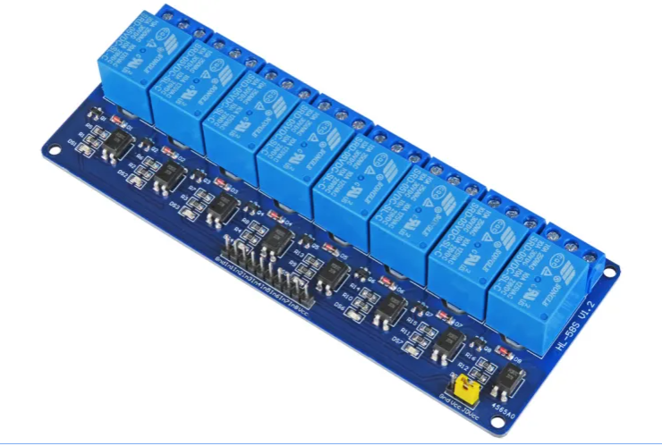
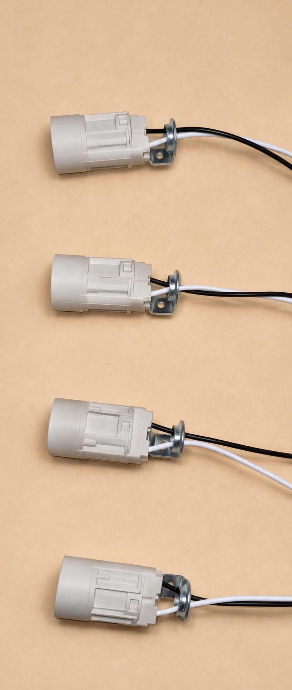

5 — Guirlande lumineuse animée
Votre mission
Vous disposez d’une carte ESP32 Dev Module, d’un module de 8 relais, de 8 douilles et de 8 ampoules colorées fonctionnant sous 12 V. Réalisez une guirlande lumineuse animée pour la vitrine de Noël. L’ensemble est alimenté par une batterie 12 V.
Vous devez concevoir l’interconnexion des composants, choisir la disposition des ampoules dans la vitrine, câbler l’ensemble et programmer l’ESP32 avec l’IDE Arduino pour produire une belle animation lumineuse.
2 élèves16 heures8 ampoules 12 V8 relaisESP32
1. Matériel disponible — observer et identifier

Programmer la séquence d’animation et piloter les relais.

Commuter séparément l’alimentation de chacune des ampoules.

Constituer les huit points lumineux de la guirlande.

Fixer les ampoules et assurer leur connexion électrique.
Les images présentent le matériel de référence. Vérifier les inscriptions et fiches techniques des composants réels avant le câblage.
2. Organisation du binôme
| Élève | Responsabilité principale | Participation commune |
|---|---|---|
| C1 | Implantation des huit ampoules, schéma électrique, fixation des douilles et câblage 12 V. | Tests de commande, mesures et dossier. |
| C2 | Repérage des broches ESP32, programmation des huit sorties et mise au point des séquences. | Contrôle du câblage, implantation et dossier. |
Les deux élèves participent aux essais, à la validation et à la présentation orale.
3. Planning chronologique — 16 heures
| Semaine | Durée | Travaux à réaliser | Livrable / validation |
|---|---|---|---|
| S1 — Analyser | 1 h | Identifier les quatre types de composants ; relever tensions, courants et bornes utiles. | Tableau de caractéristiques. |
| 1 h 30 | Proposer une disposition de 8 ampoules et la transmettre à l’équipe D. | Croquis d’implantation coté. | |
| 1 h 30 | Élaborer un schéma de principe ; tester une sortie ESP32 et un relais sur une alimentation de laboratoire protégée. | Essai d’une ampoule commandée. | |
| S2 — Concevoir | 1 h 30 | Établir le schéma complet des 8 voies : commande, relais, ampoules et alimentation. | Schéma annoté validé. |
| 1 h 30 | Programmer une séquence simple : allumage successif puis extinction. | Premier programme commenté. | |
| 1 h | Tester les voies, repérer les connecteurs et vérifier les fixations des douilles. | Tableau de correspondance broche/relais/ampoule. | |
| S3 — Réaliser | 1 h 30 | Réaliser le câblage des huit ampoules et du module relais hors tension. | Câblage contrôlé. |
| 1 h 30 | Programmer plusieurs animations : chenillard, alternance, séquence festive. | Trois effets démontrés. | |
| 1 h | Tester toutes les voies, corriger les défauts et mesurer le courant total. | Fiche d’essais. | |
| S4 — Intégrer | 1 h 30 | Installer les douilles dans la vitrine avec D ; fixer les fils et raccorder la distribution. | Montage intégré. |
| 1 h 30 | Tester les effets avec l’alimentation générale, régler les temporisations et valider l’arrêt. | Guirlande fonctionnelle et sûre. | |
| 1 h | Finaliser schéma, code commenté, mesures et présentation de 5 minutes. | Dossier et oral. |
4. Questions de conception
Comment répartir les huit ampoules pour que l’animation soit visible sans gêner le carrousel ni les automates ?
Quelle broche de l’ESP32 commande chaque relais ? Comment repérer les huit voies ?
Quelles séquences d’allumage proposez-vous et quels délais utilisez-vous ?
Comment vérifiez-vous que l’alimentation et les relais sont adaptés ?